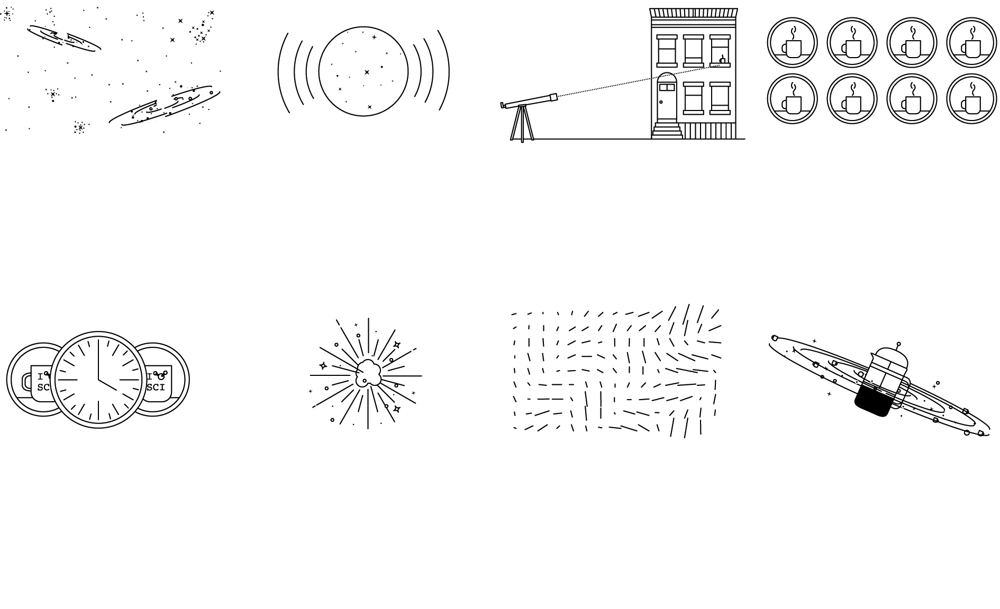
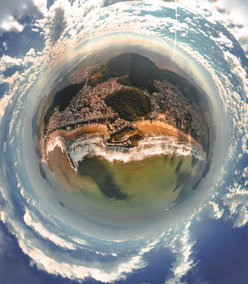

Alan Guth was one of the first physicists to hypothesize the existence of inflation, which explains
how the universe expanded so uniformly and so quickly in the instant after the Big Bang 13.8
billion years ago.Credit...Rick Friedman for The New York Times
By Dennis Overbye
March 17, 2014
CAMBRIDGE, Mass. — One night late in 1979, an itinerant young physicist named Alan Guth, with a new son and a year’s appointment at Stanford, stayed up late with his notebook and equations, venturing far beyond the world of known physics.
He was trying to understand why there was no trace of some exotic particles that should have been created in the Big Bang. Instead he discovered what might have made the universe bang to begin with. A potential hitch in the presumed course of cosmic evolution could have infused space itself with a special energy that exerted a repulsive force, causing the universe to swell faster than the speed of light for a prodigiously violent instant.
If true, the rapid engorgement would solve paradoxes like why the heavens look uniform from pole to pole and not like a jagged, warped mess. The enormous ballooning would iron out all the wrinkles and irregularities. Those particles were not missing, but would be diluted beyond detection, like spit in the ocean.
“SPECTACULAR REALIZATION,” Dr. Guth wrote across the top of the page and drew a double box around it.
On Monday, Dr. Guth’s starship came in. Radio astronomers reported that they had seen the beginning of the Big Bang, and that his hypothesis, known undramatically as inflation, looked right.
Reaching back across 13.8 billion years to the first sliver of cosmic time with telescopes at the South Pole, a team of astronomers led by John M. Kovac of the Harvard-Smithsonian Center for Astrophysics detected ripples in the fabric of space-time — so-called gravitational waves — the signature of a universe being wrenched violently apart when it was roughly a trillionth of a trillionth of a trillionth of a second old. They are the long-sought smoking-gun evidence of inflation, proof, Dr. Kovac and his colleagues say, that Dr. Guth was correct.
Inflation has been the workhorse of cosmology for 35 years, though many, including Dr. Guth, wondered whether it could ever be proved.
If corroborated, Dr. Kovac’s work will stand as a landmark in science comparable to the recent discovery of dark energy pushing the universe apart, or of the Big Bang itself. It would open vast realms of time and space and energy to science and speculation.
Confirming inflation would mean that the universe we see, extending 14 billion light-years in space with its hundreds of billions of galaxies, is only an infinitesimal patch in a larger cosmos whose extent, architecture and fate are unknowable. Moreover, beyond our own universe there might be an endless number of other universes bubbling into frothy eternity, like a pot of pasta water boiling over.
As Big as it Gets
In our own universe, it would serve as a window into the forces operating at energies forever beyond the reach of particle accelerators on Earth and yield new insights into gravity itself. Dr. Kovac’s ripples would be the first direct observation of gravitational waves, which, according to Einstein’s theory of general relativity, should ruffle space-time.
Marc Kamionkowski of Johns Hopkins University, an early-universe expert who was not part of the team, said, “This is huge, as big as it gets.”
He continued, “This is a signal from the very earliest universe, sending a telegram encoded in gravitational waves.”
The ripples manifested themselves as faint spiral patterns in a bath of microwave radiation that permeates space and preserves a picture of the universe when it was 380,000 years old and as hot as the surface of the sun.
Dr. Kovac and his collaborators, working in an experiment known as Bicep, for Background Imaging of Cosmic Extragalactic Polarization, reported their results in a scientific briefing at the Center for Astrophysics here on Monday and in a set of papers submitted to The Astrophysical Journal.
The Theory of Inflation


By LARRY BUCHANAN and JONATHAN CORUM
Dr. Kovac said the chance that the results were a fluke was only one in 10 million.
Dr. Guth, now 67, pronounced himself “bowled over,” saying he had not expected such a definite confirmation in his lifetime.
“With nature, you have to be lucky,” he said. “Apparently we have been lucky.”
The results are the closely guarded distillation of three years’ worth of observations and analysis. Eschewing email for fear of a leak, Dr. Kovac personally delivered drafts of his work to a select few, meeting with Dr. Guth, who is now a professor at Massachusetts Institute of Technology (as is his son, Larry, who was sleeping that night in 1979), in his office last week.
Cooking: Daily inspiration, delicious recipes and other updates from Sam Sifton and NYT Cooking.
“It was a very special moment, and one we took very seriously as scientists,” said Dr. Kovac, who chose his words as carefully as he tended his radio telescopes.
Andrei Linde of Stanford, a prolific theorist who first described the most popular variant of inflation, known as chaotic inflation, in 1983, was about to go on vacation in the Caribbean last week when Chao-Lin Kuo, a Stanford colleague and a member of Dr. Kovac’s team, knocked on his door with a bottle of Champagne to tell him the news.
Stanford Professor Andrei Linde celebrates physics breakthrough
Confused, Dr. Linde called out to his wife, asking if she had ordered anything.
“And then I told him that in the beginning we thought that this was a delivery but we did not think that we ordered anything, but I simply forgot that actually I did order it, 30 years ago,” Dr. Linde wrote in an email.
Calling from Bonaire, the Dutch Caribbean island, Dr. Linde said he was still hyperventilating. “Having news like this is the best way of spoiling a vacation,” he said.
By last weekend, as social media was buzzing with rumors that inflation had been seen and news spread, astrophysicists responded with a mixture of jubilation and caution.
Max Tegmark, a cosmologist at M.I.T., wrote in an email, “I think that if this stays true, it will go down as one of the greatest discoveries in the history of science.”
John E. Carlstrom of the University of Chicago, Dr. Kovac’s mentor and head of a competing project called the South Pole Telescope, pronounced himself deeply impressed. “I think the results are beautiful and very convincing,” he said.
Paul J. Steinhardt of Princeton, author of a competitor to inflation that posits the clash of a pair of universes as the cause of genesis, said that if true, the Bicep result would eliminate his model, but he expressed reservations about inflation.
Lawrence M. Krauss of Arizona State and others also emphasized the need for confirmation, noting that the new results exceeded earlier estimates based on temperature maps of the cosmic background by the European Space Agency’s Planck satellite and other assumptions about the universe.
“So we will need to wait and see before we jump up and down,” Dr. Krauss said.
Corroboration might not be long in coming. The Planck spacecraft will report its own findings this year. At least a dozen other teams are trying similar measurements from balloons, mountaintops and space.
Spirals in the Sky
Gravity waves are the latest and deepest secret yet pried out of the cosmic microwaves, which were discovered accidentally by Arno Penzias and Robert Wilson at Bell Labs 50 years ago. They won the Nobel Prize.
Dr. Kovac has spent his career trying to read the secrets of these waves. He is one of four leaders of Bicep, which has operated a series of increasingly sensitive radio telescopes at the South Pole, where the thin, dry air creates ideal observing conditions. The others are Clement Pryke of the University of Minnesota, Jamie Bock of the California Institute of Technology and Dr. Kuo of Stanford.
“The South Pole is the closest you can get to space and still be on the ground,” Dr. Kovac said. He has been there 23 times, he said, wintering over in 1994. “I’ve been hooked ever since,” he said.
The Bicep2 telescope, in the foreground, was used to detect the faint spiraling gravity patterns — the signature of a universe being wrenched violently apart at its birth.Credit...Steffen Richter/Associated Press
In 2002, he was part of a team that discovered that the microwave radiation was polarized, meaning the light waves had a slight preference to vibrate in one direction rather than another.
This was a step toward the ultimate goal of detecting the gravitational waves from inflation. Such waves, squeezing space in one direction and stretching it in another as they go by, would twist the direction of polarization of the microwaves, theorists said. As a result, maps of the polarization in the sky should have little arrows going in spirals.
Detecting those spirals required measuring infinitesimally small differences in the temperature of the microwaves. The group’s telescope, Bicep2, is basically a giant superconducting thermometer.
“We had no expectations what we would see,” Dr. Kovac said.
The strength of the signal surprised the researchers, and they spent a year burning up time on a Harvard supercomputer, making sure they had things right and worrying that competitors might beat them to the breakthrough.
A Special Time
The data traced the onset of inflation to a time that physicists like Dr. Guth, staying up late in his Palo Alto house 35 years ago, suspected was a special break point in the evolution of the universe.
Physicists recognize four forces at work in the world today: gravity, electromagnetism, and strong and weak nuclear forces. But they have long suspected that those are simply different manifestations of a single unified force that ruled the universe in its earliest, hottest moments.
As the universe cooled, according to this theory, there was a fall from grace, like some old folk mythology of gods or brothers falling out with each other. The laws of physics evolved, with one force after another splitting away.
That was where Dr. Guth came in.
Under some circumstances, a glass of water can stay liquid as the temperature falls below 32 degrees, until it is disturbed, at which point it will rapidly freeze, releasing latent heat.
Similarly, the universe could “supercool” and stay in a unified state too long. In that case, space itself would become imbued with a mysterious latent energy.
Inserted into Einstein’s equations, the latent energy would act as a kind of antigravity, and the universe would blow itself up. Since it was space itself supplying the repulsive force, the more space was created, the harder it pushed apart.
What would become our observable universe mushroomed in size at least a trillion trillionfold — from a submicroscopic speck of primordial energy to the size of a grapefruit — in less than a cosmic eye-blink.
Almost as quickly, this pulse would subside, relaxing into ordinary particles and radiation. All of normal cosmic history was still ahead, resulting in today’s observable universe, a patch of sky and stars billions of light-years across. “It’s often said that there is no such thing as a free lunch,” Dr. Guth likes to say, “but the universe might be the ultimate free lunch.”
Make that free lunches. Most of the hundred or so models resulting from Dr. Guth’s original vision suggest that inflation, once started, is eternal. Even as our own universe settled down to a comfortable homey expansion, the rest of the cosmos will continue blowing up, spinning off other bubbles endlessly, a concept known as the multiverse.
So the future of the cosmos is perhaps bright and fecund, but do not bother asking about going any deeper into the past.
We might never know what happened before inflation, at the very beginning, because inflation erases everything that came before it. All the chaos and randomness of the primordial moment are swept away, forever out of our view.
“If you trace your cosmic roots,” said Abraham Loeb, a Harvard-Smithsonian astronomer who was not part of the team, “you wind up at inflation.”